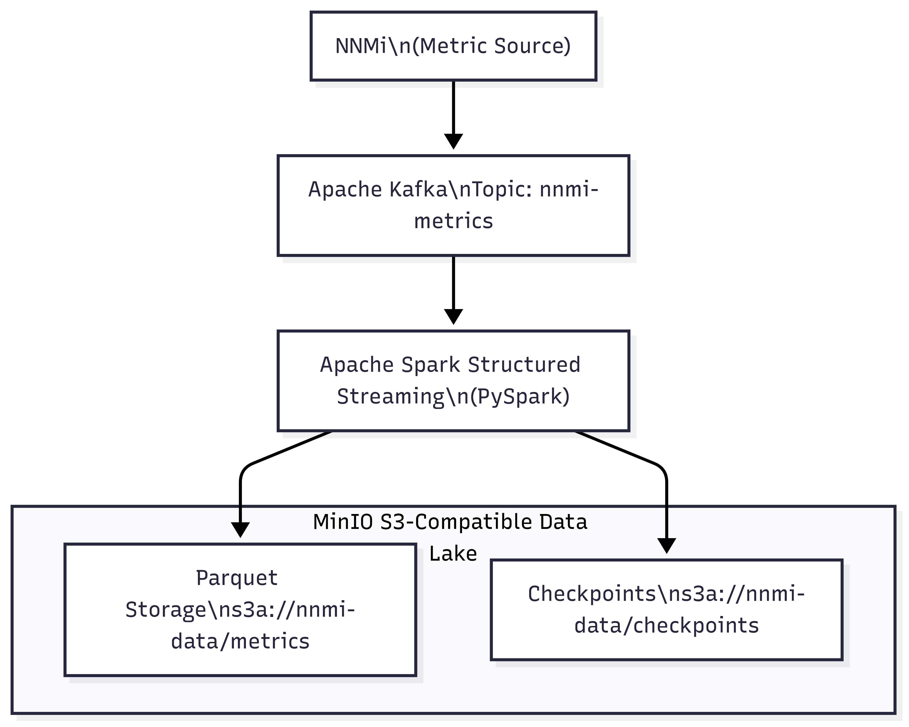

This pipeline sets up a local data lake on your workstation using open-source technologies:
The result is a queryable, reliable, scalable data lake running locally.
✅ Ingest metrics from NNMi via Kafka
✅ Parse JSON payloads (single or multiple records)
✅ Store columnar data in MinIO using Parquet format
✅ Use Spark checkpoints to ensure exactly-once delivery
| Layer | Technology | Purpose |
|---|---|---|
| Metric Producer | NNMi | Emits JSON metrics |
| Message Broker | Apache Kafka | Buffers and streams the messages |
| Stream Processor | Apache Spark Structured Streaming (PySpark) | Reads Kafka, parses JSON, writes to MinIO |
| Serialization | Parquet | Columnar storage optimized for analytics |
| Object Storage | MinIO (S3-compatible) | Stores metrics and checkpoints |

nnmi-metrics topic).{
"timestamp": "2025-06-28T12:00:00Z",
"server_name": "Server1",
"cpu_utilization": 45,
"memory_used_mb": 2048,
"network_in_kbps": 120,
"network_out_kbps": 80
}
[
{...},
{...}
]
s3a://nnmi-data/metrics/
s3a://nnmi-data/checkpoints/
| Field | Type |
|---|---|
timestamp |
String |
server_name |
String |
cpu_utilization |
Integer |
memory_used_mb |
Integer |
network_in_kbps |
Integer |
network_out_kbps |
Integer |
✅ Exactly-once delivery using checkpoints
✅ Columnar storage for fast analytics
✅ Support for both single and multiple JSON records
✅ Local S3-compatible storage (MinIO)
minio server /path/to/data).spark-submit with all Kafka and Hadoop dependencies:
spark-submit --packages org.apache.spark:spark-sql-kafka-0-10_2.12:3.4.4 your_script.pycsharp Copy Edit
kafka-console-producer.df = spark.read.parquet("s3a://nnmi-data/metrics/")
df.show()
You can partition data by date/hour for better performance.